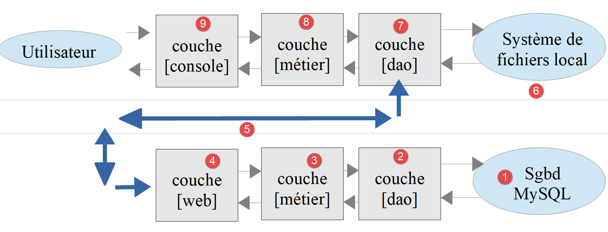

18. Exercice d'application – version 8
Nous allons reprendre l'application exemple – version 5 (et sa version 7 configurée par un fichier JSON) et allons en faire une application client / serveur. Nous mettons ainsi en pratique ce que nous avons appris au chapitre précédent sur les services web.
18.1. Introduction
L'architecture de la version 5 était la suivante :

- la couche appelée [dao] (Data Access Objects) s'occupe des échanges avec la base de données MySQL et le système de fichiers local ;
- la couche appelée [métier] fait le calcul de l'impôt ;
- le script principal est le chef d'orchestre : il instancie les couches [dao] et [métier] puis dialogue avec la couche [métier] pour faire ce qu'il y a à faire .
Nous allons migrer cette architecture vers l'architecture client / serveur suivante :

- en [2], nous reprendrons la couche [dao] de la version 5 en lui enlevant les méthodes d'accès au système de fichiers local. Ces méthodes migreront dans la couche [dao] du client [6, 7] ;
- en [3], la couche [métier] restera celle de la version 5 sans sa méthode [executeBatchImpots] qui migre dans la couche [métier] [8] du client ;
- en [4], le script serveur est à écrire : il aura à :
- créer les couches [métier] et [dao] [3, 2] ;
- dialoguer avec le script client [5, 7] ;
- en [7], la couche [dao] du client est à écrire :
- elle sera un client HTTP du script serveur [4, 5] ;
- elle reprendra les méthodes d'accès au système de fichiers local de la couche [dao] de la version 5 ;
- en [8], la couche [métier] du client offrira les mêmes méthodes que l'interface [InterfaceMetier] de la version 5. Son implémentation sera cependant différente. Dans la version 5, la couche [métier] faisait le calcul de l'impôt. Ici, c'est la couche [métier] du serveur qui fait ce calcul. La couche [métier] du client fera donc appel à la couche [dao] [7] pour dialoguer avec le serveur et lui demander de calculer l'impôt ;
- en [9], le script console aura à instancier les couches [dao, métier] du client et à lancer l'exécution de celui-ci .
Le serveur est un script web : il est placé dans le dossier [scripts-web/impots/version-08] et exécuté par le serveur Apache de [Laragon]. Le client est un script console : il est placé dans le dossier [scripts-console/impots/version-08] et exécuté dans un terminal.
18.2. Le serveur
Nous nous intéressons à la partie serveur de l'application.

Cette architecture sera implémentée par les fichiers suivants :
18.2.1. Les entités échangées entre les couches
Les entités échangées entre les couches sont celles de la version 5 : l'exception [ExceptionImpots], les données de l'administration fiscale [TaxAdminData] et la description de la base de données [Database]. Le serveur utilise aussi la classe [Utilitaires] de la version 5, dont la méthode [lireFichierJson] est utilisée par la classe [Database]. Le cours PHP 7 recopiait ces fichiers dans le dossier du serveur. Nous les chargeons directement depuis le dossier [scripts-console/impots/version-05] : une classe n'existe ainsi qu'en un seul exemplaire, et une correction faite dans la version 5 profite à toutes les versions qui l'utilisent.
18.2.2. La couche [dao]
La couche [dao] implémente l'interface [InterfaceServerDao] suivante :
- ligne 13 : la méthode [getTaxAdminData] va chercher les données de l'administration fiscale dans une base de données .
L'interface [InterfaceServerDao] est implémentée par la classe [ServerDao] suivante :
C'est le code de la classe [DaoImpotsWithTaxAdminDataInDatabase] de la version 5, présenté au chapitre 13, sans le trait [TraitDao] qui apportait les méthodes de lecture et d'écriture des fichiers JSON des contribuables. Les méthodes privées [getTranches] et [getConstantes] qui suivent, non reproduites ici, sont inchangées. Une seule différence :
- ligne 17 : l'attribut [taxAdminData] est déclaré [protected] et non plus [private]. La version 9 dérivera la classe [ServerDao] et la classe dérivée devra pouvoir initialiser cet attribut. Depuis PHP 8.4, une classe dérivée peut initialiser un attribut [readonly] hérité, à condition qu'il ne soit pas privé .
18.2.3. La couche [métier]
La couche [métier] implémente l'interface [InterfaceServerMetier] suivante :
L'interface [InterfaceServerMetier] est implémentée par la classe [ServerMetier] suivante :
- ligne 9 : la classe [ServerMetier] est la classe [Metier] de la version 5 sans sa méthode [executeBatchImpots] ;
- ligne 15 : le constructeur reçoit une référence sur une couche [dao] de type [InterfaceServerDao] ;
- ligne 26 : la méthode [calculerImpot] et les méthodes privées qu'elle utilise sont inchangées. L'algorithme a été vu et commenté dès la version 1, et sa version objet au chapitre 13 .
18.2.4. Le script serveur
Le script serveur [impots-server.php] implémente la couche [web] [4]. Il est configuré par le fichier JSON [Data/config-server.json] suivant :
- ligne 2 : le fichier JSON de configuration de la base de données MySQL. C'est le fichier [database-mysql.json] de la version 7. Le dossier [Data] contient aussi le fichier [database-pgsql.json] de la base PostgreSQL : il suffit de changer cette ligne pour que le serveur travaille avec PostgreSQL ;
- lignes 3-12 : les fichiers PHP de l'application, dont les chemins sont relatifs au dossier [version-08] du serveur. Les quatre premiers sont ceux de la version 5 ;
- lignes 13-18 : le tableau des utilisateurs autorisés à utiliser l'application .
Comme dans la version 7, il n'y a plus de clé [rootDirectory] : le script calcule lui-même son dossier racine à partir de la constante [__DIR__]. Il n'y a plus non plus de clé [absoluteDependencies], qui donnait le chemin absolu du fichier [vendor/autoload.php] de [Composer] : il est trouvé à partir de [__DIR__].
Le fichier [config-server.json] est placé dans le dossier [Data] du serveur, donc dans l'arborescence du site web : sans précaution, n'importe qui pourrait le télécharger avec l'URL [http://localhost/php8-oct-2026/scripts-web/impots/version-08/Data/config-server.json] et lire les identifiants des utilisateurs. Il en est de même pour le fichier [database-mysql.json] qui contient le mot de passe de la base de données. Le dossier [Data] contient donc un fichier [.htaccess] :
Un fichier [.htaccess] contient des directives de configuration du serveur Apache qui s'appliquent au dossier qui le contient et à ses sous-dossiers. La directive [Require all denied] interdit l'accès au dossier : Apache répond [403 Forbidden] à toute demande d'un fichier du dossier [Data]. Le script PHP, lui, lit ces fichiers sur le disque sans passer par Apache et n'est pas concerné.
Le script [impots-server.php] implémente la couche [web] de la façon suivante :
1 2 3 4 5 6 7 8 9 10 11 12 13 14 15 16 17 18 19 20 21 22 23 24 25 26 27 28 29 30 31 32 33 34 35 36 37 38 39 40 41 42 43 44 45 46 47 48 49 50 51 52 53 54 55 56 57 58 59 60 61 62 63 64 65 66 67 68 69 70 71 72 73 74 75 76 77 78 79 80 81 82 83 84 85 86 87 88 89 90 91 92 93 94 95 96 97 98 99 100 101 102 103 104 105 106 107 108 109 110 111 112 113 114 115 116 117 118 119 120 | |
Commentaires
- lignes 10-12 : on déclare les classes de la bibliothèque [HttpFoundation] qu'on va utiliser ;
- ligne 15 : le dossier racine du serveur est le dossier du script ;
- ligne 20 : on exploite le fichier de configuration ;
- lignes 23-26 : on charge le chargeur de classes de [Composer], puis tous les fichiers de l'application ;
- ligne 29 : on prépare une réponse JSON. La classe [JsonResponse] est une classe dérivée de [Response] : sa méthode [setData] encode en JSON le tableau qu'on lui donne et en fait le document de la réponse. Elle fixe aussi l'entête HTTP [Content-Type: application/json] ;
- ligne 31 : les options de la fonction [json_encode] utilisée par [setData]. Avec [JSON_UNESCAPED_UNICODE], les caractères accentués ne sont pas codés en [\uXXXX]. Avec [JSON_PRESERVE_ZERO_FRACTION], le taux d'imposition réel [0.0] est écrit [0.0] et non [0] : le client le décodera en réel (float) et non en entier ;
- lignes 36-37 : on récupère les identifiants envoyés par le client, comme au chapitre précédent ;
- lignes 39-43 : on vérifie que l'utilisateur fait bien partie des utilisateurs autorisés. La fonction [array_any] (PHP 8.4) rend [true] si l'un au moins des éléments du tableau [$config["users"]] vérifie la condition exprimée par la fonction fléchée qu'on lui passe. Elle remplace la boucle [while] du script PHP 7. Les mots de passe sont comparés avec [hash_equals] ;
- lignes 44-52 : si ce n'est pas le cas, on envoie le code HTTP [401 Unauthorized] qui indique un refus d'accès. À réception de ce code et de l'entête HTTP [WWW-Authenticate: Basic realm=…], les navigateurs affichent une fenêtre d'authentification invitant l'utilisateur à s'authentifier ;
- ligne 49 : la réponse JSON du serveur explique la cause de l'erreur. Toutes les réponses du serveur seront la chaîne JSON d'un tableau [["réponse" => qqChose]]. Le script PHP 7 renvoyait au client l'identifiant et le mot de passe refusés. Un mot de passe ne doit jamais être renvoyé, ni écrit dans des logs : nous ne renvoyons que l'identifiant ;
- lignes 56-88 : on vérifie la validité de la requête :
- une requête GET avec trois paramètres exactement ;
- un paramètre [marié] dont la valeur doit être [oui] ou [non] ;
- un paramètre [enfants] dont la valeur doit être un entier >= 0 ;
- un paramètre [salaire] dont la valeur doit être un entier >= 0 ;
- aucun autre paramètre ;
- ligne 59 : à chaque fois qu'une erreur est détectée, un message d'erreur est ajouté au tableau [$erreurs] ;
- ligne 65 : la méthode [getString] de l'objet [$request->query] rend la valeur du paramètre sous la forme d'une chaîne de caractères ;
- ligne 72 : les paramètres [enfants] et [salaire] obéissent à la même règle : on les vérifie dans une même boucle. Leurs valeurs, converties en entiers, sont placées dans le tableau [$valeurs] ;
- ligne 85 : la fonction [array_diff] rend les noms des paramètres reçus qui ne sont pas dans la liste [marié, enfants, salaire] ;
- ligne 89 : si erreur il y a, alors on envoie le code HTTP [400 Bad Request] au client. La réponse JSON contient la liste des erreurs ;
- lignes 99-104 : à partir d'ici, la requête a été vérifiée. On peut instancier les couches [dao, métier]. Cette instanciation a un coût (la lecture de la base de données) et il ne faut la faire que si on est sûr d'avoir une requête valide. La construction de la couche [dao] peut lancer une exception de type [ExceptionImpots] ;
- lignes 106-108 : le message d'erreur est souvent celui du pilote PDO du SGBD. Sous Windows, il arrive qu'il soit codé en Windows-1252 et non en UTF-8. Or la fonction [json_encode] n'accepte que des chaînes UTF-8 : [JsonResponse] lancerait alors une exception. La fonction [mb_check_encoding] vérifie le codage de la chaîne et la fonction [mb_convert_encoding] la convertit si besoin. Le script PHP 7 utilisait la fonction [utf8_encode], obsolète depuis PHP 8.2 ;
- ligne 111 : si exception il y a eu, alors on envoie le code HTTP [500 Internal Server Error] au client. Ce code signifie que le serveur n'a pu traiter une requête pourtant valide. La réponse explique la cause de l'erreur ;
- ligne 117 : le calcul de l'impôt est délégué à la couche [métier] ;
- lignes 119-120 : envoi de la réponse, avec le code de statut [200 OK] par défaut .
Testons ce script. Dans un navigateur, demandons l'URL [http://localhost/php8-oct-2026/scripts-web/impots/version-08/impots-server.php?marié=oui&enfants=2&salaire=55555]. Le navigateur affiche sa fenêtre d'authentification, dans laquelle on tape [admin] et [admin]. Il affiche alors la réponse JSON du serveur. Si le serveur refuse ces identifiants, voir au chapitre précédent le paragraphe « Quand le serveur répond toujours 401 ».
18.2.4.1. Pourquoi [http] et non [https] ?
Le client envoie ses identifiants : en toute rigueur, l'URL devrait être sécurisée ([https]), comme nous l'avons vu au chapitre précédent. Mais les navigateurs actuels ([Chrome], [Edge], [Firefox]) n'acceptent une page HTTPS que si le certificat du serveur est délivré par une autorité de certification à laquelle ils font confiance. Le certificat que [Laragon] génère pour [localhost] est autosigné : il n'est garanti par personne. Selon la version du navigateur et l'état de son cache, celui-ci affiche un avertissement avec un lien [Continuer vers localhost (dangereux)], ou bien refuse la page sans proposer de continuer. C'est le cas lorsque le navigateur a mémorisé que [localhost] doit toujours être servi avec un certificat valide (mécanisme HSTS), ou lorsqu'il juge le certificat non conforme. Les remèdes décrits au chapitre précédent (ajouter le certificat de [Laragon] au magasin de certificats de [Windows], effacer la règle HSTS) ne suffisent pas toujours.
Nous utilisons donc, dans le navigateur, l'URL non sécurisée [http://localhost/...]. Ce n'est pas une imprudence ici : une requête vers [localhost] ne quitte jamais la machine (elle passe par l'interface réseau interne, dite de « bouclage »), et aucun programme espion ne peut l'intercepter sur le réseau. Les navigateurs le savent d'ailleurs : ils traitent [http://localhost] comme une origine sûre. En revanche, dès que le serveur est accessible depuis le réseau, et a fortiori en production, le protocole HTTPS est indispensable, avec un vrai certificat délivré par une autorité reconnue (par exemple, gratuitement, par [Let's Encrypt]).
Les clients que nous écrivons, eux, ne sont pas des navigateurs : la commande [curl] (option [-k]) et le client [HttpClient] de Symfony (options [verify_peer] et [verify_host] à [false]) savent accepter le certificat autosigné de [Laragon]. Mais il faut pour cela que le protocole HTTPS ait été activé dans [Laragon] (menu [Apache / SSL / Enabled]), ce qui n'est pas le cas par défaut, et que ce certificat soit utilisable sur la machine. Pour que les exemples fonctionnent sur toute installation de [Laragon], nous utilisons donc, dans ce chapitre et les suivants, des URL [http://localhost/...] partout : dans le navigateur, dans les commandes [curl] et dans les fichiers de configuration des clients (clé [urlServer]). Pour passer en HTTPS, il suffit de remplacer [http] par [https] dans ces URL et d'ajouter l'option [-k] aux commandes [curl] : les fichiers de configuration des clients contiennent déjà les options [verify_peer] et [verify_host] nécessaires, qui sont sans effet avec [http]. Les résultats sont les mêmes avec les deux schémas.
Faisons la même requête avec [curl]. Les caractères non ASCII d'une URL doivent être codés : le caractère [é] du paramètre [marié] est codé [%C3%A9] (ses deux octets en UTF-8). Un navigateur fait ce codage lui-même :
- ligne 2 : le code [200 OK] ;
- ligne 8 : l'entête HTTP [Content-Type: application/json] fixé par la classe [JsonResponse] ;
- ligne 10 : la réponse JSON du serveur .
Sans identifiants (pas d'option [-u]), on obtient le code [401 Unauthorized] :
Faisons quelques tests d'erreur. On demande l'URL [http://localhost/php8-oct-2026/scripts-web/impots/version-08/impots-server.php?marié=x&enfants=x&salaire=x&w=x] :
Une requête POST sans paramètres (option [-X POST] de [curl]) :
Simulons maintenant une panne du SGBD. On peut arrêter MySQL depuis la fenêtre de [Laragon]. Nous avons plutôt modifié le DSN du fichier [database-mysql.json] en [mysql:host=127.0.0.1;port=3307;dbname=dbimpots-2019;charset=utf8mb4] : aucun SGBD n'écoute sur le port 3307 et la connexion est refusée, comme elle le serait si MySQL était arrêté :
- ligne 2 : le code [500 Internal Server Error] ;
- ligne 10 : le message de l'exception [ExceptionImpots] lancée par la couche [dao]. Sous Windows, le message du pilote est en français : [Aucune connexion n'a pu être établie car l'ordinateur cible l'a expressément refusée] .
On remet ensuite le DSN d'origine.
18.2.5. Tests [PHPUnit]
À chaque fois que nous construirons une nouvelle version du serveur, nous testerons les couches [dao] et [métier] comme il a été fait depuis la version 4. Ces tests ne passent pas par le serveur web : ils construisent les couches [dao] et [métier] comme le fait le script serveur et les testent directement. Ils sont placés dans le dossier [Tests] du serveur. Le cours PHP 7 utilisait le framework de tests [Codeception] ; nous utilisons [PHPUnit], comme dans les chapitres précédents.
18.2.5.1. Tests de la couche [dao]
Le test [Tests/ServerDaoTest.php] est le suivant :
Commentaires
- lignes 23-31 : on construit le même environnement de travail que celui du script serveur [impots-server.php] : lecture du fichier de configuration et chargement des fichiers de l'application. Le chargeur de classes de [Composer] n'a pas à être chargé : [PHPUnit] l'a déjà fait ;
- ligne 37 : on construit une instance de la couche [dao] à tester comme il est fait dans le script serveur ;
- à partir de maintenant, on est dans les mêmes conditions que le script serveur : la suite de la méthode [testTaxAdminData], non reproduite ici, est celle du test [DaoTest] des versions 5 à 7 .
18.2.5.2. Tests de la couche [métier]
Le test [Tests/ServerMetierTest.php] est le suivant :
Commentaires
- lignes 28-36 : on construit le même environnement de travail que celui du script serveur ;
- lignes 40-44 : avant chaque test, on construit une instance de la couche [métier] à tester comme il est fait dans le script serveur ;
- la suite du test, non reproduite ici, est celle du test [MetierTest] des versions 4 à 7 : un fournisseur de données [contribuables] avec les 11 contribuables du tableau des chiffres officiels et la méthode [testCalculerImpot] .
Les résultats des tests sont les suivants (le SGBD MySQL doit être lancé) :
18.3. Le client
Nous nous intéressons à la partie cliente de l'application.

Cette architecture sera implémentée par les fichiers suivants :
18.3.1. Les entités échangées entre couches
Les entités du client ont toutes été décrites et déjà utilisées dans la version 5 :
- l'exception [ExceptionImpots] ;
- les données d'un contribuable [TaxPayerData] .
Comme le serveur, le client les charge depuis le dossier de la version 5, ainsi que la classe [Utilitaires] et le trait [TraitDao].
18.3.2. La couche [dao]
La couche [dao] implémente l'interface [InterfaceClientDao] suivante :
- ligne 15 : la méthode [getTaxPayersData] amène en mémoire les données des contribuables du fichier JSON [$taxPayersFilename]. Si erreurs il y a, elles sont consignées dans le fichier JSON [$errorsFilename] ;
- ligne 19 : la méthode [calculerImpot] calcule l'impôt d'un contribuable ;
- ligne 23 : la méthode [saveResults] sauvegarde dans le fichier [$resultsFilename] les données du tableau [$taxPayersData] qui représentent les résultats de plusieurs calculs d'impôt .
Les méthodes [getTaxPayersData] et [saveResults] sont celles de l'interface [InterfaceDao] de la version 5. L'interface [InterfaceClientDao] est implémentée par la classe [ClientDao] suivante :
Commentaires
- ligne 17 : on insère le trait [TraitDao] de la version 5 qui implémente les méthodes [getTaxPayersData] et [saveResults]. Ne reste donc que la méthode [calculerImpot] à implémenter ;
- ligne 20 : le client HTTP de [Symfony], du type de l'interface [HttpClientInterface] ;
- lignes 26-30 : le constructeur de la classe [ClientDao] reçoit trois paramètres :
- l'URL [$urlServer] du serveur de calcul de l'impôt. C'est un paramètre promu en attribut (constructor property promotion) ;
- le tableau [$user] de clés [login] et [passwd] qui définit l'utilisateur qui fait les requêtes. L'attribut [#[\SensitiveParameter]] (PHP 8.2) demande à PHP de masquer la valeur de ce paramètre dans les traces de la pile d'exécution (stack trace) affichées en cas d'erreur : le mot de passe n'y apparaîtra pas ;
- des options supplémentaires pour le client HTTP ;
- lignes 32-35 : on crée le client HTTP une fois pour toutes, avec les options reçues, que l'on complète par l'option [auth_basic] : les identifiants de l'utilisateur seront envoyés avec chaque requête. L'opérateur [...] recopie les éléments du tableau [$httpClientOptions] dans le tableau d'options. Le client PHP 7 créait un nouveau client HTTP pour chaque requête ;
- ligne 40 : la méthode [calculerImpot] reçoit les trois paramètres à envoyer au serveur de calcul de l'impôt ;
- lignes 44-50 : le serveur est interrogé avec les trois paramètres qu'il attend. L'option [query] ajoute ces paramètres à l'URL, après les avoir codés ([marié] devient [mari%C3%A9]) ;
- ligne 54 : on récupère la réponse JSON du serveur. Si on ne met pas le paramètre [false] à la méthode [getContent], alors, si le statut de la réponse du serveur indique une erreur (codes 3xx-5xx), le client HTTP lance une exception dès qu'on cherche à obtenir le contenu de la réponse. Ici, quel que soit le statut HTTP de la réponse, on veut avoir accès au contenu de celle-ci, qui explique l'erreur ;
- lignes 55-57 : si le serveur n'a pu être joint, le client HTTP lance une exception de type [ExceptionInterface]. On la transforme en exception [ExceptionImpots] : les couches supérieures du client n'ont ainsi à gérer qu'un type d'exception ;
- ligne 60 : en mode développement, on peut afficher la réponse JSON du serveur ;
- lignes 63-68 : la réponse du serveur est la chaîne JSON d'un tableau [["réponse" => qqChose]]. On récupère le [qqChose]. Si le document reçu n'est pas du JSON (par exemple une page d'erreur HTML d'Apache), on lance une exception [ExceptionImpots] ;
- lignes 71-77 : si le code de statut HTTP n'est pas 200, alors c'est que le serveur a rencontré un problème. On lance alors une exception de type [ExceptionImpots] avec pour message la réponse JSON du serveur augmentée du code HTTP de la réponse. L'opérateur [+] réunit deux tableaux associatifs ;
- ligne 80 : on rend le résultat qui est un tableau associatif avec les clés [impôt, surcôte, décôte, réduction, taux] .
18.3.3. La couche [métier]
La couche [métier] [8] implémente l'interface [InterfaceClientMetier] suivante :
- ligne 13 : la méthode [calculerImpot] calcule l'impôt ;
- ligne 17 : la méthode [executeBatchImpots] calcule l'impôt des contribuables dont les données sont dans le fichier [$taxPayersFileName], met les résultats obtenus dans le fichier [$resultsFileName] et les erreurs rencontrées dans le fichier [$errorsFileName] .
Ce sont les deux méthodes de l'interface [InterfaceMetier] de la version 5. L'interface [InterfaceClientMetier] est implémentée par la classe [ClientMetier] suivante :
Commentaires
- ligne 12 : le constructeur de la classe [ClientMetier] reçoit comme paramètre une référence sur la couche [dao] ;
- lignes 18-20 : le calcul de l'impôt est délégué à la couche [dao] ;
- lignes 25-38 : la méthode [executeBatchImpots] est celle de la classe [Metier] de la version 5 .
18.3.4. Le script principal
Le script client [Main/MainImpotsClient.php] implémente la couche [console] [9]. Il est configuré par le fichier JSON [Data/config-client.json] suivant :
- ligne 2 : l'URL du serveur de calcul de l'impôt. Elle utilise le schéma [http] : nous avons vu plus haut pourquoi ;
- lignes 3-6 : l'utilisateur faisant les requêtes au serveur de calcul de l'impôt ;
- lignes 7-9 : les options du client HTTP. Elles ne servent qu'avec une URL [https] : comme au chapitre précédent, elles demandent alors au client de ne pas vérifier le certificat autosigné du serveur. Avec une URL [http], elles sont ignorées ;
- lignes 11-13 : les fichiers JSON des données contribuables, des résultats et des erreurs ;
- lignes 14-23 : les différents fichiers PHP du client. Les quatre premiers sont ceux de la version 5 .
Le code du script [MainImpotsClient.php] est le suivant :
Commentaires
- ligne 10 : le dossier racine du client est le dossier parent du dossier [Main] ;
- ligne 12 : le fichier de configuration, cherché dans le dossier [Data]. On peut passer son nom en argument du script ([php MainImpotsClient.php config-client-ko.json]). À défaut, c'est le fichier [config-client.json]. Nous utiliserons cette possibilité pour les tests d'erreur ;
- lignes 18-21 : chargement des dépendances : le chargeur de classes de [Composer] pour la bibliothèque [HttpClient] de Symfony, puis les fichiers du client ;
- ligne 29 : création de la couche [dao]. On passe au constructeur de la couche les informations qu'il attend :
- l'URL du serveur de calcul de l'impôt ;
- les identifiants de l'utilisateur qui va faire les requêtes ;
- les options du client HTTP ;
- ligne 31 : création de la couche [métier]. On passe au constructeur de la couche une référence sur la couche [dao] qui vient d'être créée ;
- ligne 35 : on demande à la couche [métier] de :
- calculer les impôts de tous les contribuables du fichier [taxpayersdata.json] ;
- mettre les résultats dans le fichier [results.json] ;
- mettre les erreurs dans le fichier [errors.json] ;
- lignes 37-39 : toutes les erreurs du client, y compris les erreurs de communication avec le serveur, arrivent sous la forme d'une exception [ExceptionImpots], dont on affiche le code et le message .
Le serveur Apache et le SGBD MySQL étant lancés, exécutons le client dans un terminal ouvert dans le dossier [Main] :
L'exécution du client amène les mêmes résultats que les versions précédentes. Vérifiez les fichiers suivants :
- [Data/taxpayersdata.json] : données des contribuables pour lesquels on calcule le montant de l'impôt ;
- [Data/results.json] : résultats pour les différents contribuables du fichier [Data/taxpayersdata.json]. Ce fichier est identique au fichier [results.json] de la version 7 ;
- [Data/errors.json] : les erreurs qui ont pu être rencontrées dans l'exploitation du fichier [Data/taxpayersdata.json] .
Regardons les cas d'erreur possibles. Tout d'abord, un serveur injoignable. On peut arrêter le serveur Apache de [Laragon]. Nous avons plutôt utilisé le fichier de configuration [config-client-injoignable.json], identique au fichier [config-client.json] à l'URL près : celle-ci désigne le port 4443 de la machine [localhost], sur lequel aucun serveur n'attend de requêtes ([http://localhost:4443/php8-oct-2026/...]). Les résultats dans la console du client sont alors les suivants :
L'exception lancée par le client HTTP de Symfony a été transformée par la couche [dao] en exception [ExceptionImpots] de code 40.
Maintenant, simulons une panne du SGBD MySQL, de la même façon que précédemment avec [curl]. Les résultats dans la console du client sont alors les suivants :
Remettons en état le SGBD, puis utilisons le fichier de configuration [config-client-ko.json], dans lequel l'utilisateur qui se connecte est inconnu du serveur :
Les résultats dans la console du client sont alors les suivants :
18.3.5. Tests [PHPUnit]
Comme il a été fait pour les versions précédentes, nous allons écrire un test [PHPUnit] pour la couche [métier] du client. Le test [Tests/ClientMetierTest.php] est le suivant :
Commentaires
- lignes 29-37 : définition de l'environnement du test. Nous utilisons le même que celui du script principal [MainImpotsClient.php] ;
- lignes 41-45 : construction des couches [dao] et [métier] avant chaque test. L'attribut [$this->métier] référence la couche [métier] ;
- la suite du test, non reproduite ici, est celle des versions précédentes : les 11 contribuables du tableau des chiffres officiels et la méthode [testCalculerImpot]. On remarquera que la vérification [assertSame] exige que les valeurs rendues par le serveur aient exactement les types attendus : des entiers pour l'impôt, la surcôte, la décôte et la réduction, un réel pour le taux. C'est le cas grâce à l'option [JSON_PRESERVE_ZERO_FRACTION] du serveur .
Ce test est un test du client, mais aussi, à travers lui, du serveur : le serveur Apache et le SGBD MySQL doivent être lancés. Les résultats du test sont les suivants :
Nous avons désormais une application client / serveur. Dans la version suivante, nous améliorerons le serveur : il utilisera une session, tiendra un journal de ses opérations et préviendra son administrateur par mail en cas de problème.